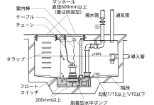

2025年
問題130 排水通気設備に関する次の記述のうち，最も不適当なものはどれか．
（1）伸頂通気方式の排水横主管の水平曲がりは，排水立て管の底部より3m以内に設けてはならない．
（2）排水立て管のオフセット部の上下600mm以内には，排水横枝管を設けてはならない．
（3）飲料用水槽において，管径100mmの間接排水管に設ける排水口空間は，最小150mmとする．
（4）排水槽の底部の勾配は，吸込みビットに向かって1/15以上1/10以下とする．
（5）自然流下式の排水横管の勾配は，管内最小流速が2.0m/sとなるように設ける．
2025年
問題130 正解（5） 頻出度AAA
自然流下式の排水横引き管の勾配は，流速が最小0.6～最大1.5m/sとなるように設ける．
勾配が緩いと流速が遅くなり，洗浄力が弱くなって固形物等が付着しやすくなる．逆に勾配をきつくし過ぎると，流速が速くなって流水深が浅くなり，固形物に対する搬送能力が弱まる．
-(1)伸頂通気方式の排水横主管の水平曲りは，排水立て管の底部より3m以内には設けてはならない（2025-130-1図）．
-(2) 配管のオフセット部分では排水の流れが乱れがちとなり，横枝管からの排水の流入を妨げるおそれがあるので，上下600mm以内に横枝管を接続しないようにするとともに，2025-130-2図のように通気を取る．
-(3) 間接排水管の排水口空間（2025-130-1表参照）．
| 間接排水管の管径［mm］ | 排水口空間［mm］ |
| 25以下 | 最小50 |
| 30～50 | 最小100 |
| 65以上 | 最小150 |
| 各種飲料水用の 給水タンク等 |
最小150 |
この給水タンク（貯水槽）の最小150mmが頻出．
排水口空間を設けて排水の逆流を防止することを間接排水という（2025-130-3図参照）．
間接排水としなければならない器具，水受け容器は，2025-130-2表参照．
| 区分 | 機器名称 | |
| サービス用機器 | 飲料用 | 水飲み器，飲料用冷水器，給茶器，浄水器 |
| 冷蔵用 | 冷蔵庫，冷凍庫 ，その食品冷蔵・冷凍機器 | |
| 厨房用 | 皮むき機，洗米機，製氷器，食器洗浄機，消毒器，調理用，流し（食材を溜め洗いするシンク等） | |
| 洗濯用 | 洗濯機◎，脱水機◎，洗濯機パン◎ | |
| 医療･研究用機器 | 蒸留水装置，滅菌水装置，滅菌器，滅菌装置，消毒器，洗浄機等 | |
| 水泳プール | プール自体の排水，オーバフロー排水，ろ過装置逆洗水，周辺歩道の床排水◎ | |
| 噴水 | 噴水自体の排水◎，オーバフロー排水◎，ろ過装置逆洗水◎ | |
| 配管・装置の排水 | 貯水槽・膨張水槽のオーバフロー及び排水 上水・給湯・飲料用冷水ポンプ及び露受け皿の排水◎ 上水・給湯・飲料用冷却水系統の水抜き 太陽熱給湯装置のオーバーフロー・排水および空気抜き弁の排水 圧力水槽用逃がし弁及び貯湯槽からの排水 消火栓系統及びスプリンクラー系統の水抜き◎ 冷凍機◎，冷却塔◎，熱媒として水を使用する装置及び空気調和機器の排水◎ 上水用水処理装置の排水 | |
| 温水系統等の排水 | 貯湯槽・電気温水器からの排水 ボイラ◎，熱交換器◎及び蒸気管のドリップ等の排水◎ |
|
※ ◎印は，「排水口開放」でも良い機器．
排水口開放とは，排水が飛び散るのを嫌ったり，スペース的に困難な場合に，規定の排水口空間を取らない，簡易間接排水方法のことである．飲食関係や人が直接触れる水受け容器の間接排水としては認められていない（2025-130-4図参照）．
-(4)排水を建物から重力式で排除できない場合は，最下層に排水槽を設け，排水ポンプで排出する．
排水槽は，貯留する排水の種類によって汚水槽，雑排水槽，湧水槽，雨水槽などがある．
排水槽の構造については2025-130-5図並びに下記参照．

1．マンホール
内部の保守点検が容易な位置（排水ポンプもしくはフート弁の真上）に有効内径600mm（直径が60cm以上の円が内接することができるもの）以上のマンホールを設ける．排水槽のマンホールふたはパッキン付き密閉型にする． マンホールは2個以上設けることが望ましい．
2．排水槽の底部には吸込みピットを設け，ピットに向けて1/15以上，1/10以下の勾配を設ける．
清掃作業時の安全を図るため底部の一部を階段にする．
3．吸込みピットは水中ポンプの周囲に保守のためのスペース並びにエアの吸込み防止のため200mm以上の空間を設けられる大きさとする．
4．通気管は単独に大気中に開口する．
5．排水槽は，通気管以外の部分から臭気が漏れない構造とする．
6．ブロワによってばっ気する場合は，槽内が正圧になるので排気を行う．
7．排水ポンプについて
1）排水ポンプは原則として2台設置し，常時は交互運転する．
2）排水ポンプは汚水の流入部から離して設置する（エア混入防止）．
3）排水ポンプには，水中ポンプ，立て型ポンプ，横型ポンプ等があるが，設置スペースが要らず，据付の容易な水中ポンプが多く使用されている．
4）排水槽の水位・ポンプの運転の制御にはフロートスイッチ（2025-130-6図）が適している（電極棒は汚物が絡まり導通して誤動作する）．